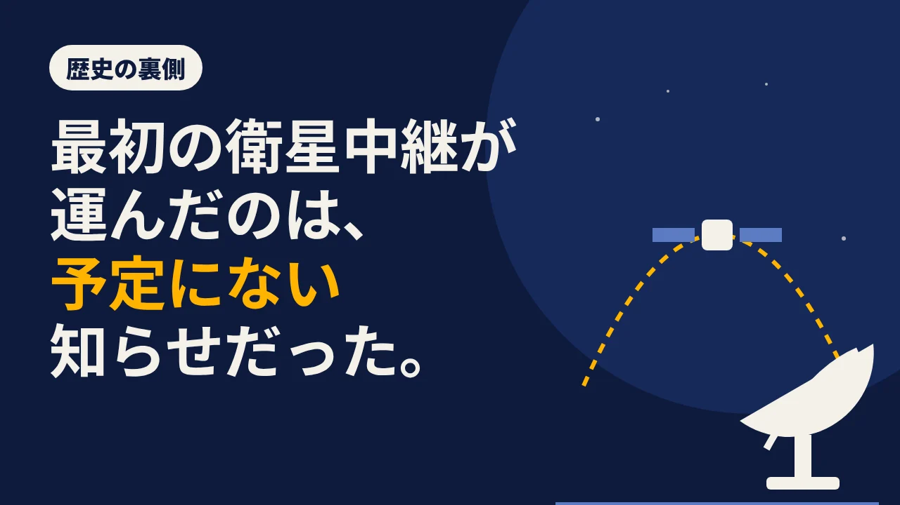

LOTUS VISUAL JOURNAL / 歴史の裏側 #02
最初の衛星中継が運んだのは、予定にない知らせだった。
年末が近づくと、海外のライブやスポーツの中継を当たり前のように見る季節になります。地球の裏側の映像が、ほとんど待たずに家の画面に届く。
日本でこれが始まった日は、はっきり記録に残っています。1963 年 11 月 23 日。その初の日米衛星中継では、ケネディ大統領暗殺の知らせも伝えられました。
01 / STORY茨城の、大きな皿
舞台は茨城県の北部、当時の国際電信電話(KDD)の茨城宇宙通信実験所です。そこに、直径 20 メートルのパラボラアンテナが立っていました(のちの改修で 22 メートル)。開発したのは三菱電機。アンテナの記録を残す資料では、反射鏡を 2 枚使う「カセグレン式」のアンテナとして紹介されています。
相手は、太平洋の向こう、アメリカ・カリフォルニア州のモハーベにある地球局。2 つの局の間を、前の年の 12 月に打ち上げられた実験用の通信衛星「リレー 1 号」がつなぐ計画でした。日米で初めて、テレビの映像を宇宙経由で送る実験です。
そして 11 月 23 日。茨城のアンテナは、太平洋を越えてきた映像をとらえました。その日の中継では、アメリカのケネディ大統領が撃たれたことを伝えるニュースも送られました。当時のアンテナ担当者の回想(佐藤敏雄氏「宇宙中継50周年」)では、ニュースが送られたのは衛星の第 2 周目だったとされています。
02 / MECHANISM宇宙に置いた中継所
なぜ、わざわざ宇宙を通すのか。KDDI が 2023 年に公開した振り返りによると、衛星通信が使えるようになる前の国際通信は短波の無線が中心で、送れるのは電報や音声、粗い静止画に限られていました。動く映像を、海の向こうからそのまま届ける手段がなかったのです。
テレビの電波は、まっすぐ進みます。地球は丸いので、地上どうしでは水平線の向こうへ届きません。ならば、ずっと高い場所に「中継所」を置いて、そこで折り返せばいい。高い場所から見れば、太平洋の両岸が同時に見えるからです。衛星中継の考え方は、山の上に中継所を置くのと同じで、ただその山を宇宙まで高くしたものだと考えると分かりやすいかもしれません。
ただし、衛星から地上に届く電波はとても弱くなります。それを拾うために、20 メートルもの大きな皿が必要でした。茨城のアンテナは、宇宙から降りてくるかすかな信号を集める、巨大な耳だったわけです。
03 / TWIST流れなかったあいさつ
実はこの中継には、別の番組が予定されていたと伝えられています。米ダートマス大学のジェニファー・リンド教授のブログによれば、予定されていたのはケネディ大統領が日本の人々に向けて事前に録画したあいさつでした。しかし、アメリカ時間の 11 月 22 日、大統領はダラスで撃たれます。時差のため、日本では 23 日のことでした。
同じブログは、予定のあいさつは流されず、モハーベの風景の映像のあとに日本のアナウンサーが訃報を伝え、その後数日にわたって、ダラスやワシントンの映像が送られたと書いています。茨城のアンテナの資料も、この知らせは「偶発的に受信」されたものだったとしています。
技術の実験としては、成功でした。太平洋を越えて、動く映像が届いた。その回線は、大統領の死を伝えるニュースも運びました。回線は、流れる中身を選べません。この日、日本の人々は、遠い国の出来事を、ほとんど同じ時に見るという体験を、悲しい知らせから始めることになりました。
その後、衛星中継は 1969 年のアポロ 11 号の月面着陸、1972 年の札幌、1998 年の長野のオリンピックへと続いていきます(KDDI の年表による)。茨城の施設は、2007 年に役目を終えて閉じられました。
04 / ON SITELOTUS VISUAL の現場では
いまのイベントでも、会場の映像を別の場所へ送る場面は増えています。会場と配信で見せ方を分けたり、離れた会場どうしをつないだり。1963 年の茨城と規模はまったく違いますが、「送る道」と「流す中身」は別のものだ、という点は同じです。
道のほうは、本番の前に確かめられます。たとえば、本番と同じ機材と経路で、カラーバーや音のテスト信号を流してみる。中身のほうは、当日になってみないと変わることがあります。登壇者の順番が入れ替わる、映す予定の素材が使えなくなる。そうしたときにどうするかは、例えば差し替え用の画面を用意しておく、進行が変わったときの合図をあらかじめ決めておくなど、案件の意図に合わせて考えておくことになります(1963 年の出来事から決まる決まりではありません)。映像を送る機材の基礎は光ファイバーの映像伝送の記事に、現場の仕事は技術提供のページにまとめています。
05 / TAKEAWAY今日の持ち帰り
- 日本の衛星通信は、1963 年 11 月 23 日の日米テレビ衛星中継で始まった。受けたのは茨城の直径 20 メートルのアンテナ(KDDI・アンテナ歴史保存資料)。
- 初の日米衛星中継が行われた日に、ケネディ大統領暗殺のニュースも伝えられた。予定されていた大統領のあいさつについては、本文で紹介した資料による。
- 「送る道」は前もって確かめ、「流す中身」が変わったときの決めごとは、案件の意図に合わせて考えておく。
関連:LED より前の大画面(歴史の裏側 #01)・封筒を間違えた夜・技術提供
出典:KDDI公式発表(2023年11月22日)(日米衛星中継の開始日と、その日に暗殺のニュースが伝えられたこと)／佐藤敏雄氏「宇宙中継50周年」(当時のアンテナ担当者による回想。ニュースが送られたのは第2周目と記す)／INTERNET Watch「KDDI、国際衛星通信60周年を振り返り」(2023 年 11 月 22 日)(1963 年 11 月 23 日の日米テレビ衛星中継、記事では「最初の放送」がケネディ大統領暗殺のニュースと表現、茨城宇宙通信実験所、2007 年閉所、それ以前の国際通信、年表)／アンテナ歴史保存資料「KDD 茨城宇宙通信実験用アンテナ」(直径 20 m・改修後 22 m、開発者 三菱電機、暗殺を報じるニュースを偶発的に受信)／Invention & Technology「衛星による初の太平洋横断テレビ信号受信」(モハーベ地球局、リレー 1 号、20 m のカセグレン式アンテナ)／Jennifer Lind「Relaying Grief」(ダートマス大学、2015 年 3 月 24 日)(予定されていた大統領のあいさつ、実際に流れた内容。この点はこの資料による)。2026 年 11 月 11 日閲覧。